A real reading pace
Characters per second, or BPM from 20 to 250 for lyrics and verses read to a track. Change either while the script runs and the scroll re-paces at once.
A teleprompter for Windows, macOS and Linux that reads at a real human pace, keeps every screen on the same word, and opens the script you were sent.
This page describes Freally Teleprompt 1.5.0, the released version: everything on it is in 1.5.0, and nothing still planned is on it.
Each figure is what version 1.5.0 does, counted from its code. Nothing is rounded up.
Everything Freally Teleprompt 1.5.0 does is free today, for everyone: no paid tier, no subscription, no account and no trial that runs out.
Characters per second, or BPM from 20 to 250 for lyrics and verses read to a track. Change either while the script runs and the scroll re-paces at once.

Type -- for a short pause or --N for an N-second hold. Each is one chip the cursor cannot split, it lights up as the read reaches it, and read-aloud turns it into a real silence.

The preview, the projector and the devices on your network follow one engine, counted in characters, so they agree on the word being read even at different text sizes.

Full screen on any display, mirrored for beam-splitter glass, with its own transport and keys for the person reading.

Off until you switch it on. A link and a QR code open the script in any browser on your own network: read-only, with a key that changes every time the app starts.

Clean prompter text with its paragraphs kept, and a report that counts what could not come across — pictures, footnotes, comments. Nothing is saved until you say so.

A line that starts with # is a marker on the seek bar and in a jump list. Find and replace matches case or whole words, and is undone in one press.

Tap your tempo to fit BPM to your own delivery, hear a click with a count-in, and see the bar and beat on screen and as lines on the seek bar.

Read it through and see each section's planned time against the real one, and the pace you actually read at. It records timings only — no microphone, no audio.

Mark Chorus, [Verse 1] or ## Bridge as words you do not perform: they stay on screen, dimmed, and take no read time, so your lyrics stay on the bar.

A searchable map of every command, with clashes flagged. Pedals and remotes bind like any key, and a key can work while another app is in front.

Word and phrase suggestions in 18 languages from lists inside the app, dictation in English that runs on your computer, and read-aloud in your system's own voices.

Typeface, size, weight, colour, margins, line spacing and the reading line, on every screen at once. The app speaks 18 languages, in a dark or a light theme.

Scripts are plain files on your computer, and there is no telemetry. The app's only request to the internet is a check for a newer version, and nothing installs without your yes.
Freally Teleprompt 1.5.0 — the released version, the one you can use today — next to six commercial teleprompter apps. Every cell for another product comes from its maker's own pages or app-store listing, checked on 2 October 2026, and prices are in US dollars as of October 2026.
| Feature | Freally Teleprompt 1.5.0 | PromptSmart | Speakflow | Teleprompter.com | Teleprompter Pro | PromptDog | TeleScroll |
|---|---|---|---|---|---|---|---|
| Price (USD, October 2026) | Free today | $9.99a month | $19a month | $19.99a month | $59.99a year | $69one-timeon sale; usually $99 | $249.99 |
| Desktop app for Windows, macOS and Linux | has itWindows · macOS · Linux | has it+ iOS · Android | partlyWindows · Macand in a web browser | partlyiOS · Android · Macand in a web browser | partlyiPhone · iPad · Mac | partlyWindows · Mac | partlyWindows · Mac |
| Use it without making an account | has it | does not | does not | does not | not verified | does not | not verified |
| Works with no internet connection | has itonly the update check goes online | has it | does not | has it | not verified | has itafter registering online | not verified |
| Opens Word and PDF files | has italso RTF, plain text and Markdown | has it | does not | has it | has itWord on iPhone and iPad only | does notplain text and RTF only | not verified |
| Paces the scroll to a music tempo (BPM) | has it20–250 | not verified | not verified | not verified | not verified | not verified | not verified |
| Timed pauses written into the script | has it | not verified | not verified | not verified | not verified | not verified | not verified |
| Mirrored text for prompter glass | has it | has it | has it | has it | has it | has it | has it |
| Shows the script on other devices | has iton your own network, in a browser | has itthrough the maker's portal, online | has itover the internet | has itover Bluetooth, Wi-Fi or the internet | has ita second display, or another device on the network | partlya second monitor; tablets need other apps | not verified |
| Foot pedals and presenter remotes | has it | has it | partlykeyboard shortcuts only | has it | has it | has it | has it |
| Scroll follows your voice | does notremoved in 1.1.0 | has itVoiceTrack | has itFlow | has itVoiceGlide | not verified | not verified | partlya paid add-on |
The short version: of these seven, only Freally Teleprompt says it paces the scroll by BPM and holds timed pauses written into the script, and it is the only one that runs on Windows, macOS and Linux with no account and no payment.
Where they win: PromptSmart, Speakflow and Teleprompter.com scroll by following your voice, and TeleScroll does with a paid add-on; Freally Teleprompt 1.5.0 does not. PromptSmart, Teleprompter.com and Teleprompter Pro have phone and tablet apps that record video while you read and keep your scripts in their cloud, and Speakflow adds AI writing tools and real-time collaboration.
Freally Teleprompt's column is version 1.5.0, which is released, so the table compares what you can use today. Its price is today's: Freally Teleprompt is free today, and future versions may be sold. The other products change too; this table is as of 2 October 2026.
Speed is characters per second, so the preview, the projector and every phone move through the same text at the same rate whatever their font size. The engine is written twice, for the app's core and for its interface, and the two are kept identical.
An import counts what it could not bring across instead of losing it quietly, and never turns a typeset dash into a pause nobody wrote.
Documents are read in a separate process with a time limit, so a damaged PDF ends that one import, not the prompter.
No account, no telemetry and no cloud. Your scripts are plain text files you can open in any editor, and the network mirror stays on your own network.
Settings change only when you press Apply, a key is claimed system-wide only when you ask, and an update installs only after you say yes.
Every control has a focus ring, dialogs keep focus inside them, the seek bar is a real slider, and reduced motion and reduced transparency are respected.
Stated plainly, because a feature list that hides its gaps is not worth reading. Everything on this page is in 1.5.0; the steps after it are on the road to 2.0, each marked with its state.
There are no downloads on this site, and none on this page.